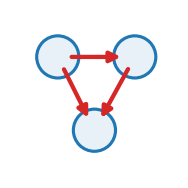

attractor_flow
Ride a set along a strange-attractor vector field dx/dt = f(x).

lateral acts on: particle prediction: none
Rides a whole cloud along a dissipative 3D strange-attractor vector field \(\dot{\mathbf x}=f(\mathbf x)\). No interaction: every point is an independent tracer of the same chaotic flow, so a tiny seed ball is stretched-and-folded until the cloud is the attractor. system selects one of ten classic flows (Lorenz, Rössler, Aizawa, Sprott B, Halvorsen, Thomas, Chen, Chua, Dadras, Rabinovich–Fabrikant), each citing its originating paper.
Role in Plexus
- Kind — \(\mathcal{O}_E\) Lateral: within-set interaction over a relation \(E\).
- Acts on —
particle(the set the operator acts on). - Reads —
system - Writes / returns — emits no integrated force — it mutates a field / relation / membership, or feeds a substep.
- Prediction —
none. - Dimensions — 3D.
Mechanism
ONE Lateral, first-derivative operator (EMIT=velocity) for a whole family of dissipative 3D chaotic flows. Every point of a set reads its OWN position and returns its instantaneous velocity f(x); the engine integrates x <- x + dt*f(x). There is no interaction and no neighbour graph – the cloud is a swarm of independent tracers of the SAME flow, so a tiny seed ball is stretched-and-folded by the chaos until the cloud IS the attractor (the shape draws itself). This is the same “compact seed -> sprawling structure” contract as the inverse-square galaxy spec, with the pairwise force replaced by a prescribed vector field.
The system param switches between the classic flows (state s = (x, y, z)); its constants are optional spec overrides of the defaults below:
lorenz (sig=10,rho=28, xd = sig(y - x)
aizawa (a=.95,b=.7,c=.6, xd = (z - b) x - d y
sprott_b (a=1) xd = a y z ; yd = x - y ; zd = 1 - x y
chen (a=35,b=3,c=28) xd = a(y - x)
28.58,m0=-8/7, h(x) = m1 x + (m0-m1)/2 (|x+1| - |x-1|) [PWL diode]3D ONLY (SUPPORTED_DIMS=[3]). This is not an unfinished 2D interface: by the Poincare-Bendizson theorem a continuous autonomous flow in the plane cannot be chaotic, so a strange attractor of this kind needs >=3 dimensions – there is no 2D specialization to write. clamp caps |v| as a safety valve (systems like Dadras go Euler-unstable at large dt, and Rabinovich-Fabrikant’s chaotic attractor coexists with escape-to-infinity orbits); the clamp keeps a stray point finite without distorting the well-conditioned bulk of the flow.
Provenance (each system reproduces a published flow): * lorenz – E. N. Lorenz, “Deterministic Nonperiodic Flow”, J. Atmos. Sci. 20 (1963). * rossler – O. E. Rossler, “An Equation for Continuous Chaos”, Phys. Lett. A 57 (1976). * sprott_b – J. C. Sprott, “Some simple chaotic flows”, Phys. Rev. E 50 (1994), case B. * rabinovich_fabrikant – M. I. Rabinovich & A. L. Fabrikant, Sov. Phys. JETP 50 (1979). * chen – G. Chen & T. Ueta, “Yet another chaotic attractor”, Int. J. Bif. Chaos 9 (1999). * chua – L. O. Chua’s circuit double-scroll (Matsumoto-Chua-Komuro, 1985). * dadras – S. Dadras & H. R. Momeni, Phys. Lett. A 373 (2009). * halvorsen, aizawa, thomas – cyclically-symmetric / torus-spike / labyrinth flows from J. C. Sprott, “Chaos and Time-Series Analysis” (2003) and the standard attractor catalogs. Introduced by the prototype/attractors campaign and promoted here as one system-switched operator (the four->ten attractor family), the same way the galaxy prototype became squared_law.
\[ \dot{\mathbf x} \;=\; f_{\text{system}}(\mathbf x), \qquad \text{e.g. Lorenz: }\; \dot x=\sigma(y-x),\;\; \dot y=x(\rho-z)-y,\;\; \dot z=xy-\beta z \] A first-derivative (velocity) flow, so the engine integrates \(\mathbf x \mathrel{+}= \Delta t\,f(\mathbf x)\). 3D only: a continuous planar autonomous flow cannot be chaotic (Poincaré–Bendixson).
Parameters
| parameter | role | default |
|---|---|---|
system |
which attractor: one of [‘halvorsen’, ‘lorenz’, ‘aizawa’, ‘sprott_b’, ‘thomas’, ‘rossler’, ‘dadras’, ‘chen’, ‘chua’, ‘rabinovich_fabrikant’] | required |
scale |
time-rescale the flow (f -> scale*f); >1 = faster | 1.0 |
clamp |
max | velocity |
Minimal spec
sets:
cloud: {n: 60000, start: [0.6,0.6,14.6, 1.4,1.4,15.4]} # tiny seed cube in the basin
operators:
- {op: attractor_flow, at: cloud, system: lorenz, sigma: 10.0, rho: 28.0, beta: 2.6666667}
schedule: [attractor_flow]Example output
Identifiability
The trajectory pins down the flow’s constants (e.g. Lorenz \(\sigma,\rho,\beta\)) from the shape and timing of the attractor, but sensitive dependence means individual point paths diverge exponentially — only the invariant set (the attractor geometry) and its spectrum are reproducibly identifiable, not any single orbit.
Source
src/plexus/operators/attractor_flow.py — the registered operator.
"""attractor_flow -- ride a set along a strange-attractor vector field dx/dt = f(x).
ONE Lateral, first-derivative operator (EMIT=velocity) for a whole family of dissipative
3D chaotic flows. Every point of a set reads its OWN position and returns its instantaneous
velocity f(x); the engine integrates x <- x + dt*f(x). There is no interaction and no
neighbour graph -- the cloud is a swarm of independent tracers of the SAME flow, so a tiny
seed ball is stretched-and-folded by the chaos until the cloud IS the attractor (the shape
draws itself). This is the same "compact seed -> sprawling structure" contract as the
inverse-square galaxy spec, with the pairwise force replaced by a prescribed vector field.
The `system` param switches between the classic flows (state s = (x, y, z)); its constants are
optional spec overrides of the defaults below:
halvorsen (a=1.4) xd = -a x - 4y - 4z - y^2 (+ cyclic y,z)
lorenz (sig=10,rho=28, xd = sig(y - x)
beta=8/3) yd = x(rho - z) - y ; zd = x y - beta z
aizawa (a=.95,b=.7,c=.6, xd = (z - b) x - d y
d=3.5,e=.25,f=.1) yd = d x + (z - b) y
zd = c + a z - z^3/3 - (x^2+y^2)(1 + e z) + f z x^3
sprott_b (a=1) xd = a y z ; yd = x - y ; zd = 1 - x y
thomas (b=0.208) xd = sin(y) - b x (+ cyclic y,z)
rossler (a=b=.2,c=5.7) xd = -y - z ; yd = x + a y ; zd = b + z(x - c)
dadras (a=3,b=2.7,c=1.7, xd = y - a x + b y z
d=2,e=9) yd = c y - x z + z ; zd = d x y - e z
chen (a=35,b=3,c=28) xd = a(y - x)
yd = (c - a) x - x z + c y ; zd = x y - b z
chua (alpha=15.6,beta= xd = alpha(y - x - h(x)) ; yd = x - y + z ; zd = -beta y,
28.58,m0=-8/7, h(x) = m1 x + (m0-m1)/2 (|x+1| - |x-1|) [PWL diode]
m1=-5/7)
rabinovich_fabrikant xd = y(z - 1 + x^2) + g x
(alpha=1.1,gamma=.87) yd = x(3z + 1 - x^2) + g y ; zd = -2 z(alpha + x y)
3D ONLY (SUPPORTED_DIMS=[3]). This is not an unfinished 2D interface: by the
Poincare-Bendizson theorem a continuous autonomous flow in the plane cannot be chaotic, so a
strange attractor of this kind needs >=3 dimensions -- there is no 2D specialization to write.
`clamp` caps |v| as a safety valve (systems like Dadras go Euler-unstable at large dt, and
Rabinovich-Fabrikant's chaotic attractor coexists with escape-to-infinity orbits); the clamp
keeps a stray point finite without distorting the well-conditioned bulk of the flow.
Provenance (each `system` reproduces a published flow):
* lorenz -- E. N. Lorenz, "Deterministic Nonperiodic Flow", J. Atmos. Sci. 20 (1963).
* rossler -- O. E. Rossler, "An Equation for Continuous Chaos", Phys. Lett. A 57 (1976).
* sprott_b -- J. C. Sprott, "Some simple chaotic flows", Phys. Rev. E 50 (1994), case B.
* rabinovich_fabrikant -- M. I. Rabinovich & A. L. Fabrikant, Sov. Phys. JETP 50 (1979).
* chen -- G. Chen & T. Ueta, "Yet another chaotic attractor", Int. J. Bif. Chaos 9 (1999).
* chua -- L. O. Chua's circuit double-scroll (Matsumoto-Chua-Komuro, 1985).
* dadras -- S. Dadras & H. R. Momeni, Phys. Lett. A 373 (2009).
* halvorsen, aizawa, thomas -- cyclically-symmetric / torus-spike / labyrinth flows from
J. C. Sprott, "Chaos and Time-Series Analysis" (2003) and the standard attractor catalogs.
Introduced by the `prototype/attractors` campaign and promoted here as one `system`-switched
operator (the four->ten attractor family), the same way the galaxy prototype became `squared_law`.
"""
from __future__ import annotations
import torch
from plexus.models.base import Lateral
from plexus.models.registry import register_operator
# --------------------------------------------------------------------------- #
# the vector fields -- pure torch, vectorised over the [N, 3] cloud; `p` overrides constants
# --------------------------------------------------------------------------- #
def _halvorsen(x, y, z, p):
a = p.get("a", 1.4)
return (-a * x - 4.0 * y - 4.0 * z - y * y,
-a * y - 4.0 * z - 4.0 * x - z * z,
-a * z - 4.0 * x - 4.0 * y - x * x)
def _lorenz(x, y, z, p):
s = p.get("sigma", 10.0); r = p.get("rho", 28.0); b = p.get("beta", 8.0 / 3.0)
return (s * (y - x), x * (r - z) - y, x * y - b * z)
def _aizawa(x, y, z, p):
a = p.get("a", 0.95); b = p.get("b", 0.7); c = p.get("c", 0.6)
d = p.get("d", 3.5); e = p.get("e", 0.25); f = p.get("f", 0.1)
return ((z - b) * x - d * y,
d * x + (z - b) * y,
c + a * z - (z ** 3) / 3.0 - (x * x + y * y) * (1.0 + e * z) + f * z * (x ** 3))
def _sprott_b(x, y, z, p):
a = p.get("a", 1.0)
return (a * y * z, x - y, 1.0 - x * y)
def _thomas(x, y, z, p):
b = p.get("b", 0.208)
return (torch.sin(y) - b * x, torch.sin(z) - b * y, torch.sin(x) - b * z)
def _rossler(x, y, z, p):
a = p.get("a", 0.2); b = p.get("b", 0.2); c = p.get("c", 5.7)
return (-y - z, x + a * y, b + z * (x - c))
def _dadras(x, y, z, p):
a = p.get("a", 3.0); b = p.get("b", 2.7); c = p.get("c", 1.7)
d = p.get("d", 2.0); e = p.get("e", 9.0)
return (y - a * x + b * y * z, c * y - x * z + z, d * x * y - e * z)
def _chen(x, y, z, p):
a = p.get("a", 35.0); b = p.get("b", 3.0); c = p.get("c", 28.0)
return (a * (y - x), (c - a) * x - x * z + c * y, x * y - b * z)
def _chua(x, y, z, p):
a = p.get("alpha", 15.6); b = p.get("beta", 28.58)
m0 = p.get("m0", -1.1428571); m1 = p.get("m1", -0.7142857)
h = m1 * x + 0.5 * (m0 - m1) * (torch.abs(x + 1.0) - torch.abs(x - 1.0))
return (a * (y - x - h), x - y + z, -b * y)
def _rabinovich_fabrikant(x, y, z, p):
al = p.get("alpha", 1.1); g = p.get("gamma", 0.87)
return (y * (z - 1.0 + x * x) + g * x,
x * (3.0 * z + 1.0 - x * x) + g * y,
-2.0 * z * (al + x * y))
_FIELDS = {
"halvorsen": _halvorsen, "lorenz": _lorenz, "aizawa": _aizawa, "sprott_b": _sprott_b,
"thomas": _thomas, "rossler": _rossler, "dadras": _dadras, "chen": _chen, "chua": _chua,
"rabinovich_fabrikant": _rabinovich_fabrikant,
}
ATTRACTOR_SYSTEMS = tuple(_FIELDS)
def attractor_velocity(system: str, pos: torch.Tensor, params: dict | None = None) -> torch.Tensor:
"""The strange-attractor vector field f(x): dx/dt for every point of `pos` [N, 3].
`system` is one of `ATTRACTOR_SYSTEMS`; `params` overrides that system's constants.
Returns a velocity tensor [N, 3] on the same device/dtype as `pos`."""
if system not in _FIELDS:
raise ValueError(f"attractor_flow: unknown system {system!r}; "
f"choose one of {list(ATTRACTOR_SYSTEMS)}")
p = params or {}
x, y, z = pos[:, 0], pos[:, 1], pos[:, 2]
xd, yd, zd = _FIELDS[system](x, y, z, p)
return torch.stack([xd, yd, zd], dim=-1)
# --------------------------------------------------------------------------- #
# the operator -- a within-set (lateral) velocity field, engine-integrated
# --------------------------------------------------------------------------- #
@register_operator("attractor_flow", family="motion", set="particle", kind="lateral")
class AttractorFlow(Lateral):
"""Advect every particle along a strange-attractor vector field dx/dt = f(x) (see module
docstring for the ten systems + provenance). A first-derivative flow, so the engine does
x += dt*f(x) (forward Euler); a small dt keeps a dissipative flow pinned to its attractor."""
EMIT = "velocity" # delta IS dx/dt; engine integrates x += dt * f(x)
SUPPORTED_DIMS = [3] # continuous autonomous chaos requires >=3D (Poincare-Bendixson)
REQUIRES_PARAMS = ["system"] # which attractor to ride
MECHANISM_TAGS = ["strange_attractor", "deterministic_chaos", "dissipative_flow",
"sensitive_dependence", "phase_space_contraction", "dynamical_system"]
PARAM_ROLES = {"system": f"which attractor: one of {list(ATTRACTOR_SYSTEMS)}",
"scale": "time-rescale the flow (f -> scale*f); >1 = faster",
"clamp": "max |velocity| safety cap (0 = off)"}
REFERENCE = "Lorenz, E. N. (1963). Deterministic nonperiodic flow. J. Atmos. Sci. 20:130-141."
# spec-line keys that are plumbing/knobs, not per-system physical constants
_NON_CONST = {"op", "at", "to", "from", "_at", "system", "scale", "clamp",
"emit", "after_frame", "before_frame"}
def __init__(self, params, device="cpu"):
super().__init__(params, device)
self.at = params.get("_at", "particle")
self.system = str(params["system"])
if self.system not in _FIELDS:
raise ValueError(f"attractor_flow: unknown system {self.system!r}; "
f"choose one of {list(ATTRACTOR_SYSTEMS)}")
self.scale = float(params.get("scale", 1.0))
self.clamp = float(params.get("clamp", 0.0))
self.const = {k: float(v) for k, v in params.items()
if k not in self._NON_CONST and isinstance(v, (int, float))}
def forward(self, H, mask=None):
lvl = H.level(self.at)
pos = lvl.get("pos")
occ = lvl.occ
vel = attractor_velocity(self.system, pos, self.const) * self.scale
if self.clamp > 0: # safety cap on |v|
mag = vel.norm(dim=-1, keepdim=True).clamp(min=1e-9)
vel = vel * (mag.clamp(max=self.clamp) / mag)
vel = vel * occ[:, None] # dormant points hold still
if mask is not None:
vel = vel * mask[:, None].float()
return {self.at: vel}